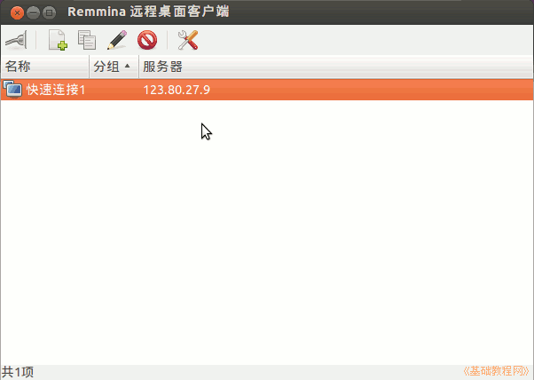
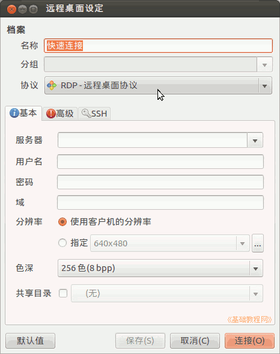
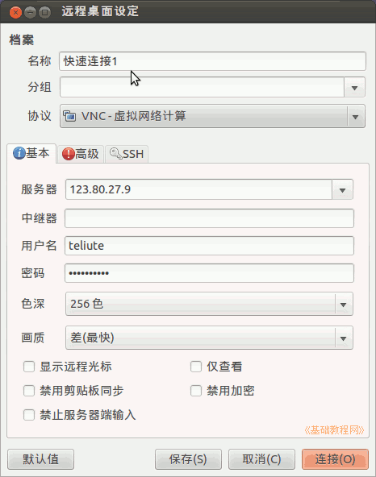
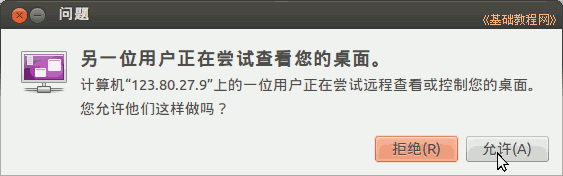
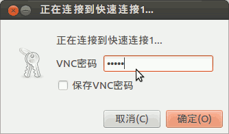
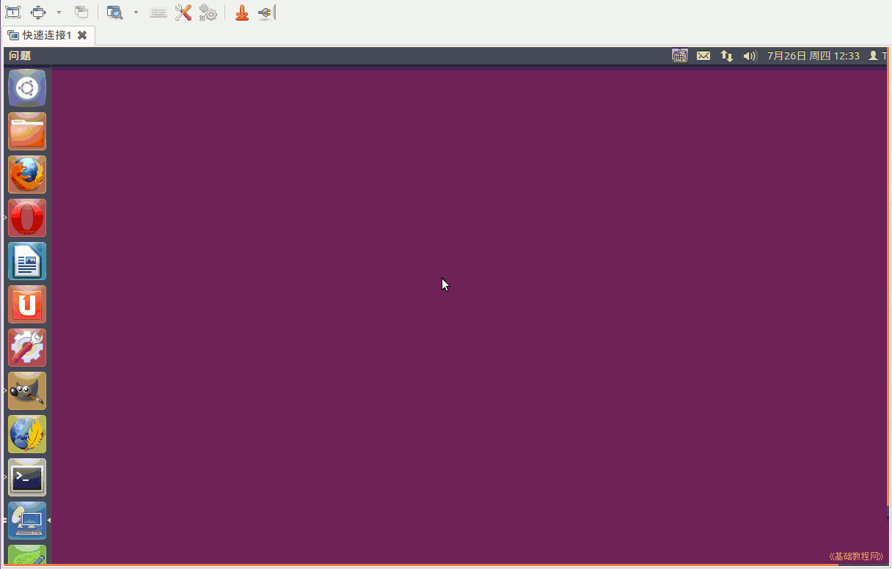
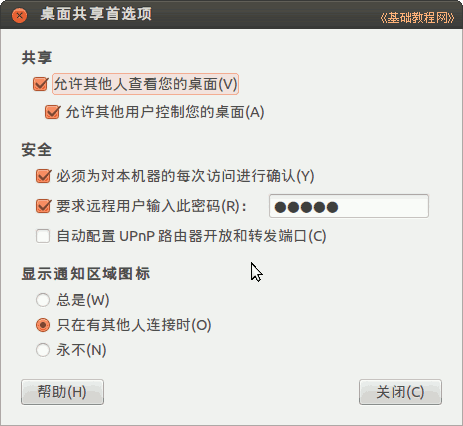

Ubuntu 入门操作指南
作者：TeliuTe 来源：基础教程网
四十九、Remmina 远程桌面客户端 返回目录 下一课使用它，您可以查看远程计算机的桌面；
1、Remmina 远程桌面客户端
1）点击主按钮，在搜索中输入 remmina ，打开程序，或者依次点“主按钮、所有程序、过滤结果、互联网、Remmina 远程桌面客户端”；

2）点工具栏上一个带加号的“新建”按钮，出来连接对话框，默认是 RDP-远程桌面协议；

3）从上到下依次输入名称、选择 VNC-虚拟网络协议，输入服务器地址、用户名、密码，点“保存”可以保存这个连接，点“连接”直接连接；

4）在出来的询问对话框中点“允许”，输入 VNC 密码；
 
5）点确定即可显示对方计算机的桌面，就像操作自己的计算机一样；

6）注意可能会卡住计算机，提前保存和关闭其他程序，
7）12.04 开启VNC，参考第52课的桌面共享，点“主按钮、所有程序、过滤结果、互联网、桌面共享”，
或者运行 sudo apt-get install gnome-panel 安装gnome桌面，然后注销用 GNOME Classic 登录，
再点左上角菜单“应用程序－系统工具－首选项－桌面共享”，打勾“允许其他人查看您的桌面”；

本节学习了Remmina 远程桌面客户端的基础知识，如果你成功地完成了练习，请继续学习下一课内容；
本教程由86团学校TeliuTe制作|著作权所有
基础教程网：http://teliute.org/
美丽的校园……
转载和引用本站内容，请保留作者和本站链接。